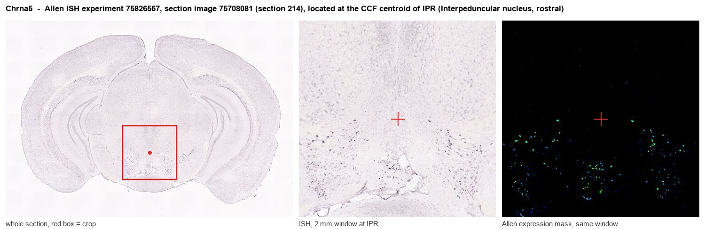
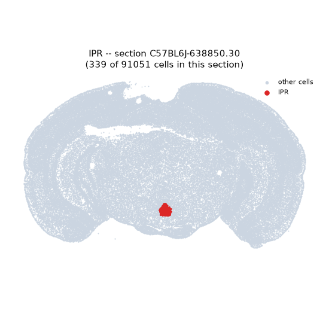
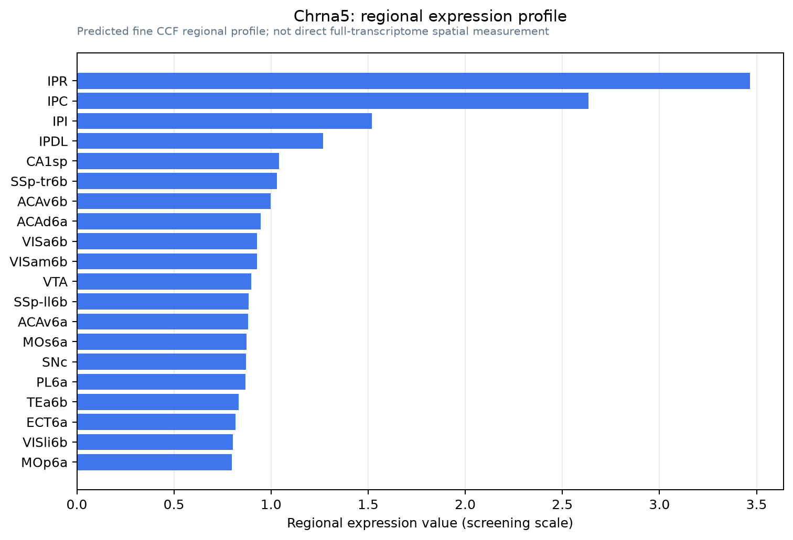

Chrna5
Neuronal acetylcholine receptor subunit alpha-5
Spatial tier: RESTRICTED · Class: ION_CHANNEL · Top region: IPR (Interpeduncular nucleus, rostral) · Positive regions: 17/554
45.2Discovery Score
40.6Targetability Score
CEvidence grade C
What this means: Chrna5: fine CCF profile is restricted toward IPR (top regions: IPR, IPC, IPI, IPDL, CA1sp; 17 positive regions); direct spatial validation is still required.
Function in IPR: evidence, prediction, innovation
- Gene function
- CHRNA5 encodes the alpha-5 subunit of neuronal nicotinic acetylcholine receptors. Alpha-5 is an accessory subunit: it cannot form a binding site itself but occupies the fifth position in alpha4beta2 or alpha3beta4 pentamers, where it strongly increases calcium permeability and alters desensitisation. The human D398N coding variant in the CHRNA5-A3-B4 cluster is one of the strongest common genetic risk factors for heavy smoking and lung cancer.
- Region function
- The rostral interpeduncular nucleus is the principal target of the medial habenula, receiving cholinergic, glutamatergic and substance-P input via the fasciculus retroflexus; it mediates nicotine aversion, withdrawal and anxiety-like behaviour.
- Published in this region
- direct Direct. Morton et al. 2018 showed that Chrna5-expressing neurons in the interpeduncular nucleus mediate aversion primed by prior stimulation or nicotine exposure, using a Chrna5-Cre line to identify and manipulate the cells. Fowler et al. 2011 established that alpha-5 signalling in the habenulo-interpeduncular pathway sets the aversive brake that limits nicotine intake, and Antolin-Fontes et al. 2015 reviewed how this pathway drives nicotine aversion and withdrawal.
- Predicted function
- Prediction: alpha-5 in the rostral interpeduncular nucleus should turn out to be a state-dependent amplifier rather than a constitutive brake - it is predicted to raise the calcium permeability of alpha3beta4 receptors specifically after prior nicotine exposure, converting a modest cholinergic input into a strong aversive signal and thereby setting the ceiling on nicotine self-administration. IPN-restricted Chrna5 knockdown is predicted to increase nicotine intake at high unit doses and reduce somatic and affective withdrawal signs, while lentiviral re-expression of wild-type but not D398N alpha-5 in IPN of knockouts should restore the aversive ceiling.
- Innovation
- ★★☆☆☆ 2/5 Chrna5 in the interpeduncular nucleus has a clear primary paper and an active literature, though the rostral subdivision specifically and the D398N variant's local effects remain open.
- Tools
- Chrna5-Cre mice (Morton et al. 2018), Chrna5 knockout and the humanised D398N knock-in; lentiviral alpha-5 re-expression constructs; nicotine, mecamylamine and the alpha3beta4-preferring antagonist AT-1001; Chat-Cre and Tac1-Cre for the medial habenular inputs; anti-alpha5 antibodies.
- References
Direct evidence located at the region

Allen ISH experiment 75826567, section image 75708081 (section 214): the section that contains the CCF centroid of Interpeduncular nucleus, rostral according to the Allen image-to-atlas alignment (reference_to_image), with a 2 mm window around that point. Left: whole section, red box = window. Middle: ISH signal. Right: Allen's expression-mask view of the same window. open this image in the Allen viewer
Look it up yourself: Allen Mouse Brain ISH for Chrna5Allen reference atlas: IPR (structure 607344834)ABC Atlas MERFISH viewer(in the ABC Atlas choose dataset MERFISH-C57BL6J-638850-CCF, colour cells by gene "Chrna5" or by parcellation_substructure "IPR")All genes confined to IPR + 3-D brain
Direct spatial evidence
MERFISH REGION LOCATOR

Regional expression figure

Predicted WMB × fine-CCF profile; not direct full-transcriptome spatial measurement.
Spatial profile
Evidence and specificity
- Evidence status
- PREDICTED_FINE
- Direct sources
- None; predicted localization only
- Exclusive threshold
- 12 positive regions out of 554
- Spatial specificity
- 0.278
- Top-region fraction
- 0.060
- Filter status
- PASS
Interpretation limits
- Cell-type-to-region projection is imputed expression, not direct spatial measurement.
- Adult reference atlases do not establish stability across age, sex, strain, state, or disease.
- Transcript abundance does not guarantee protein abundance or genetic-tool performance.